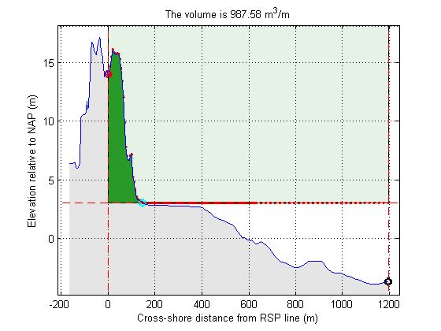

get some arbitrary profile data
In this tutorial we will calculate the volume of a certain cross-section
Contents
Read in data
See the previous JarKus tutorial for a detailed explanation
url = jarkus_url; id = nc_varget(url,'id'); transect_nr = find(id==8005700)-1; year = nc_varget(url,'time'); year_nr = find(year == 1979)-1; xRSP = nc_varget(url,'cross_shore'); z = nc_varget(url,'altitude',[year_nr,transect_nr,1],[1,1,-1]); x = xRSP(~isnan(z)); z = z(~isnan(z));
Available options
First we want an overview of available jarkus funtions
help jarkus
Contents of jarkus: jarkus_createtransectstruct - create jarkus transect struct jarkus_findCrossings - routine to find crossings of 2 profiles jarkus_getMKL - returns the cross shore coordinate of the volume based coastal indicator MKL jarkus_getVolume - generic routine to determine volumes on transects jarkus_getVolumeFast - generic routine to determine volumes on transects jarkus_grid2netcdf - converts Jarkus grid struct to netCDF-CF file jarkus_netcdf2grid - converts netCDF-CF file to Jarkus grid struct jarkus_transect2grid - converts Jarkus transect struct to Jarkus grid struct jarkus_transect2netcdf - converts Jarkus transect struct to netCDF-CF file jarkus_transect2oldtransect - converts Jarkus transect struct jarkus_updategrid - update Jarkus grid struct jarkus_url - returns the link to the jarkus netCDF.
Apparantly, there are two (competing) functions in the toolbox that can calculate volumes: jarkus_getVolume and jarkus_getVolumeFast to find out differences, click on the help links
jarkus_getVolumeFast
Firs an example using jarkus_getVolumeFast
We need to define a box within which the volume can be computed, as volume if not defined for a line.
UpperBoundary = 1000; LowerBoundary = 3; LandwardBoundary = 0; SeawardBoundary = max(x);
and the we call the function. We use the additional 'plot' argument to get a plot of the result.
[Volume] = jarkus_getVolumeFast(x, z, UpperBoundary, LowerBoundary,... LandwardBoundary, SeawardBoundary,'plot')
Volume = 933.1031
jarkus_getVolume
to be added...
Volume difference between two transects
to be added...